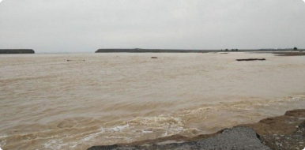

Шавкат Мирзиёев строго предупредил хокимов всех уровней

19 мая состоялось видеоселекторное совещание, посвященное дополнительным мерам поддержки предпринимательства.
По данным пресс-службы главы государства, из-за пандемии в Узбекистане число бедных и безработных увеличится, а доходы семей уменьшатся. На совещании обсуждены дополнительные меры и приоритетные задачи в этом направлении.
Прежде всего, серьезное внимание уделено обеспечению гарантий прав предпринимателей и неприкосновенности их имущества.
«Предупреждаю всех хокимов. Если имущество хоть одного предпринимателя будет изъято незаконно, хоким одной лишь отставкой не отделается, но и ответит перед законом», - подчеркнул Шавкат Мирзиёев.
Компетентным ведомствам даны указания усилить ответственность за нарушение неприкосновенности собственности, обеспечить полноценное исполнение решений суда о компенсации имущества предпринимателей.
Согласно поручению президента деловая активность в каждом районе и городе будет анализироваться на ежемесячной основе.
Бизнес-омбудсман будет вносить правительству информацию о хокимах районов и городов, которые допускают нарушения прав и неприкосновенности собственности предпринимателей.
Кабинетом Министров будет рассматриваться вопрос о соответствии должности хокимов городов и районов, которые не решают проблемы предпринимателей и не работают с ними в достаточной мере.
- Cамые популярные новости
По факту прорыва Сардобинского водохранилища возбуждено уголовное дело
-
По факту прорыва Сардобинского водохранилища возбуждено уголовное дело
-
По факту прорыва Сардобинского водохранилища возбуждено уголовное дело
-
По факту прорыва Сардобинского водохранилища возбуждено уголовное дело
- Cамые популярные новости
По факту прорыва Сардобинского водохранилища возбуждено уголовное дело
-
Мирзиёев рассказал, зачем было построено
Сардобинское водохранилище
-

Карантин в Узбекистане продлен до 1 июня
-

Обмелевшая Сардоба: стихия или
человеческий фактор?